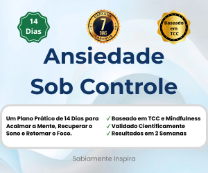

Um plano prático e validado cientificamente para quem deseja silenciar o alerta constante da ansiedade e recuperar o sono reparador.
Técnicas de respiração e relaxamento muscular que ensinam o seu sistema nervoso a sair do estado de "luta ou fuga".
Ferramentas de Terapia Cognitivo-Comportamental para identificar e desarmar pensamentos automáticos negativos.
Um protocolo de higiene do sono para desligar o cérebro à noite e acordar com energia e foco.
Este guia não é um conjunto de conselhos motivacionais. É um protocolo baseado em Neuroplasticidade e Mindfulness, desenhado para criar novos caminhos neurais de calma e segurança em apenas 14 dias.
De R$ 97,00 por apenas
Ou 3x de R$ 16,77 no cartão
🔒 Acesso imediato após a confirmação do pagamento.